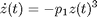
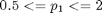
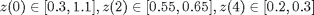

Toy Example from Stephen Prajna
The following is a modified example presented by Stephen Prajna at the 2003 IEEE Conference on Decision and Control.
Consider a system with the goverening differential equation:

From prior information we know

And we have measurements of z at three times:

To formulate this problem we shall take p1 and z(0) as our two parameters. There are two model files in the example folder called prajModel1 and prajModel2. Both files solve for z(t). The first returns the value at time 2, the second at time 4.
Contents
Building the Parameter Domain
First we build our parameter domain by building two ParameterDomain objects, then vertically concatenating them.
%p1 = FreeParameter('p',1.3,0.8); %p2 = FreeParameter('x0',0.7,0.4); p1 = FreeParameter('p',1.5,1.25); p2 = FreeParameter('x0',1.5,1.25); P = [p1;p2]
Undefined function or method 'FreeParameter' for input arguments of type 'char'.
Error in ==> runPrajnaExample at 29
p1 = FreeParameter('p',1.5,1.25);
Generate ResponseModel and ResponseObservation objects
Now we create the ResponseModel and ResponseObservation objects.
RM1 = ResponseModel(@prajModel,'2') RO1 = ResponseObservation(0.6,0.05) RM2 = ResponseModel(@prajModel,'4') RO2 = ResponseObservation(0.25,0.05)
Build Dataset
Now we build the Dataset units by pairing models and experiments. We can then vertically concatenate the units to form our dataset.
Pair1 = ModelAndObservationPair(RO1,RM1,'x(t1) with Prajna example'); Pair2 = ModelAndObservationPair(RO2,RM2,'x(t2) with Prajna example'); Dset = DCDataset([Pair1; Pair2],P)
Invalidation
Prajna showed this dataset to be invalid. So we should find a negative consistency measure.
opt1 = DCOptions('display','iter','fitConvergenceTol',0.1,'maxBranchBoundIter',10); %metamodel modes are no longer supported %opt2 = DCOptions('display','iter','fitConvergenceTol',0.1,'maxBranchBoundIter',3,'analysisMode','metamodelBasedA'); %opt3 = DCOptions('display','iter','fitConvergenceTol',0.1,'maxBranchBoundIter',3,'analysisMode','metamodelBasedB'); CMObj = ConsistencyTest(Dset,opt1); %opt = DCOptions('display','iter','tol',0.1,'maxBranchBoundIter',6,'trans',{'linXlinY';'logXlinY'},'constraints',[1 1 0 0]); %[LB, UB] = ConsistTest(Dset,opt)